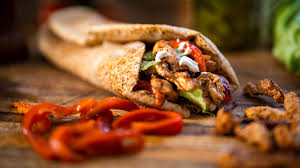

Recipe of Shawarma
Components:
- Chicken
- Lemon juice
- Olive oil
- Spices
- Spice control
How to make
- Mix marinade – For convenience, just mix the marinade directly in a ziplock bag. A bag works best because the chicken remains nicely coated in the marinade. If you prefer to use a container, either turn the chicken a few times or increase the marinade by 50%.
- Add chicken into the marinade. Seal the bag, removing excess air, then massage to coat from the outside. Leave to marinade for 12 to 24 hours in the fridge. If you’re pressed for time, even 3 hours will do!
- Yogurt sauce – Make the yogurt sauce simply by mixing the ingredients then set aside for at least 20 minutes to let the flavours meld. This will keep for 3 days in the fridge.
- Cook chicken either on the stove or on the BBQ. It will get a great crust on it from the spices, and you will adore the smell. It’s intoxicating!
- Rest chicken for at least 3 minutes before serving to allow the juices to redistribute throughout the flesh, else they will just run out everywhere when you slice the meat.
- To serve, just pile everything on a platter and let everybody make their own wraps! The chicken, lettuce, tomato slices, onion, yogurt sauce and warmed flatbreads – homemade or store bought. If the chicken is on the larger side, I sometimes slice it. But if they are smaller, I tend to just leave them whole.
How to serve chicken shawarma
- Wraps – As Chicken Shawarma wraps (like Gyros and Doner kebabs), with tomato, lettuce, and a simple yoghurt sauce on the side. Other optional extras include: red onion, cheese (query authenticity? But that’s ok!!), hummus, hot sauce / chilli sauce.
- Shawarma plate – With rice and salads on the side. Thought I usually do serve pita bread or another type of flatbread as well, with a big dollop of either Hummus or the Yogurt Sauce in this recipe, just because it’s very on theme. ☺️
Below, the Chicken Shawarma is pictured with Mejadra which is a Middle Eastern lentil rice (seriously so good you can / will want to eat it just by itself!) and a Middle Eastern Chickpea Salad (I skip the spicing of chickpeas otherwise there’s just too much kapow spices going on).